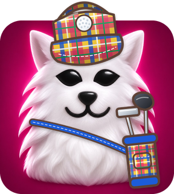
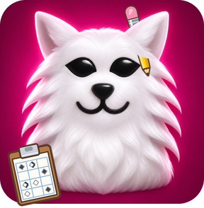
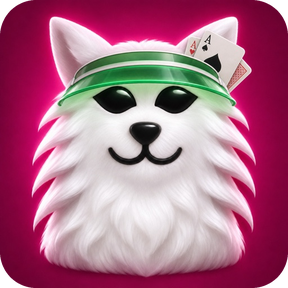

DeeDog Outfits
DeeDog dresses for each app's job. You'll find the outfit in the app's Settings, under About, and on the app's page here.
DeeDog dresses for each app's job. You'll find the outfit in the app's Settings, under About, and on the app's page here.
A tall chef's hat that reads "Kiss the Cook," perched on DeeDog's head.

A plaid cap topped with a golf ball, and a matching bag of clubs slung across DeeDog's chest.

A pencil tucked behind DeeDog's ear and a scorecard clipboard, ready for the next game.

A green dealer's visor, with the ace of hearts and the ace of spades tucked behind DeeDog's ear.
Back to DeeDogDevelopment.